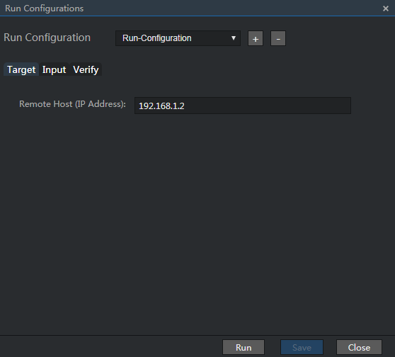
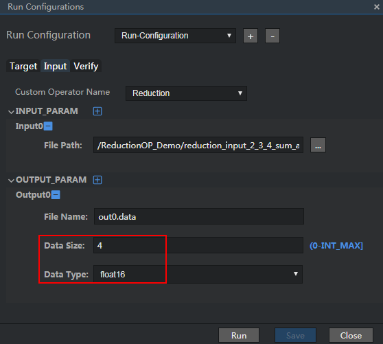

Configuring Running Parameters
Select the TE operator project and choose Run > Edit Run Configuration... from the main menu. The dialog box for configuring running parameters is displayed, as shown in Figure 1.
Figure 1 Dialog box for configuring operator running parameters
Configure the running parameters.
Table 1 describes the configuration parameters.
Table 1 Description of TE configuration parameters
Configures the running target information.
- For an ASIC project, enter the IP address of the host.
- For an Atlas DK project, enter the IP address of the developer board.
Describes the input and output data of the operator. Figure 2 shows a configuration example.
- Custom Operator Name
Indicates the name of a single operator. After a project is created, the name is automatically displayed. In this example, the operator name is Reduction.
- INPUT_PARAM: Indicates the description of the input data. You can add a maximum of 20 data records.
Input0: Indicates the first input data.
File Path: Indicates the input data file. Select the binary input data file built in Building an Input Data File. You are not allowed to manually edit the file path.
- OUTPUT_PARAM: Indicates the description of the output data. You can add a maximum of 10 records.
Output0: Indicates the first output data.
Provides parameters for checking whether the output of the running parameter configuration in the Run Configurations dialog box is consistent with the expected result. Parameters on this tab are optional. If they are not set, the system does not check the correctness of output data during running.
Figure 3 shows the configuration example. The configuration items are described as follows:
- EXPECT_PARAM: Indicates the expected result of a user, which is used to check the output result. The number of data records must be the same as the number of output data records. A maximum of 10 data records can be entered.
Expect0: Indicates the first verification data.
File Path: Allows you to select a data verification file. You are not allowed to manually edit the file path.
- Precision Deviation: Indicates the allowed range of the precision deviation. The value range is [0, 1). The default value is 0.2. A smaller value indicates higher precision.
- Statistical Discrepancy: Indicates the percentage of data whose precision deviation does not meet the threshold in the entire data set. The value range is (0,1). The default value is 0.2. A smaller value indicates higher precision.
Figure 2 shows an example of the input configuration.
In Input_PARAM, select the input data file built in Building an Input Data File. In OUTPUT_PARAM, enter the output file name and choose value from the Data Type drop-down list box.
Figure 2 Example of the input configuration
Figure 3 shows the example of configurations on the Verify tab
Figure 3 Configuration example on the Verify tab

 NOTE:
NOTE:
Tensor Engine performs data verification only after the following requirements are met: （1） The number of parameters in the EXPECT_PARAM area are the same as those in the OUTPUT_PARAM area in the Run Configurations dialog box. （2） The configuration items on the Verify tab must all be specified.After the configuration is complete, click Save.